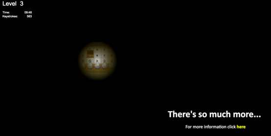
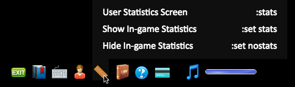
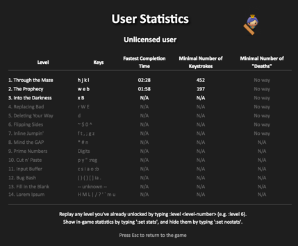

Homework 02
During this semester, you will be required to gain proficiency with at least one command line text editor. The two most widely used command line text editors are GNU Emacs and Vim. There are others (such as nano, but in this class you will be expected to become proficient with at least one of Emacs or Vim.
In this assignment you will play the first levels of an online VIM tutorial game. The game is designed to teach you proficiency in the most important keyboard shortcuts needed to efficiently use Vim. There is a paid version that costs $25, and provides more in-depth tutorial lessons. In this assignment you only need to play the free levels.
In this assignment you will also practice more use of the Linux command line, and will upload a file to the class server.
Do the following:
- Go to VIM Adventures
- Play the game through the end of the free levels
- When you get to the end of the free levels, it should look something like this:

- At the bottom of the screen, select “User Statistics Screen”:

- You should now see the “User Statistics Screen”:

- Take a screenshot of your entire screen, including the “User Statistics Screen”. Save the screenshot as hw02.jpg. If your screenshot program saved the file as something other than a JPEG, open it with an image editor and save it as a JPEG, with the exact file name hw02.jpg
-
Open a terminal. On Mac OS X, this will be a program called Terminal in your Applications/Utilities folder. On Windows, you will likely need to download and set up a third-party program such as PuTTY. On Linux, this will be the GNOME Terminal or KDE Konsole, or the equivalent.
- At the command line within the terminal emulator, use scp to upload hw02.jpg to the cl.linguistics.illinois.edu server:
scp hw02.jpg yourActualNetID@cl.linguistics.illinois.edu:~/hw02.jpg
If you’re using Windows, instead of doing the above, you’ll probably need to use a different third-party SCP client for Windows such as WinSCP to upload the file.
- At the command line within the terminal emulator, connect to the cl.linguistics.illinois.edu server using ssh. Your username is your NetID, and your password should be your NetID password. Note: to connect to the server from off campus, you may first need to connect to the campus network using an approved VPN client.
ssh yourActualNetID@cl.linguistics.illinois.edu
- Use ls to verify that you successfully uploaded the file:
ls -l ~/
You should see a file listed called hw02.jpg, with a date and timestamp that corresponds to when you uploaded the files. If you don’t, that probably means you did not successfully upload hw02.jpg.
- Use mkdir to create a new directory on the server called hw02:
mkdir ~/hw02
- Use mv to move hw02.jpg into the hw02 directory:
mv ~/hw02.jpg ~/hw02/
- Use ls to verify that you successfully moved the file:
ls -l ~/hw02
You should see a file listed called hw02.jpg, with a date and timestamp. If you don’t, that probably means you did not successfully move hw02.jpg into the hw02 directory.